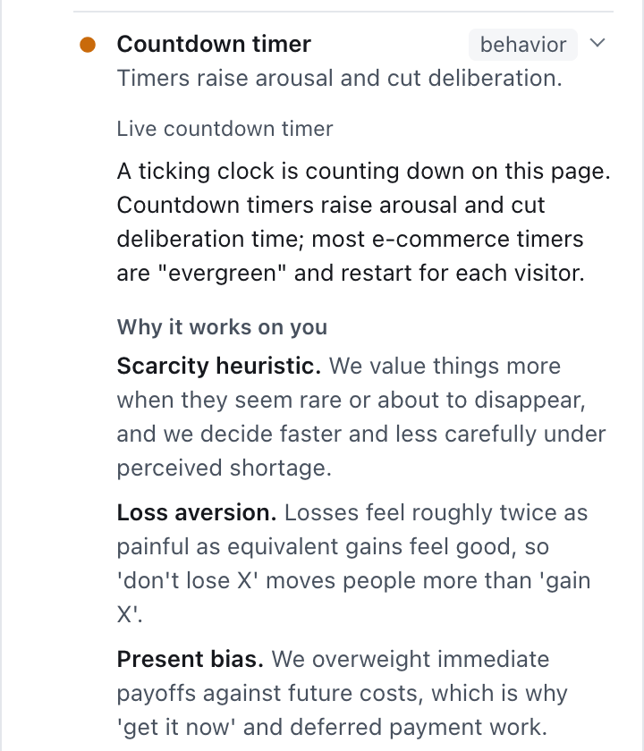
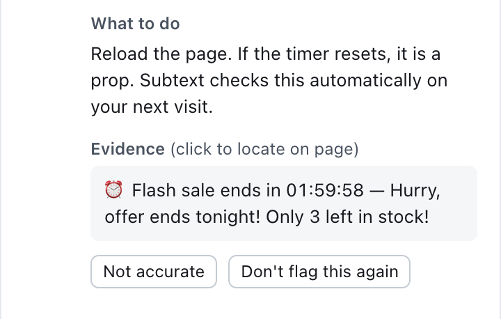

Subtext is a browser extension that labels the persuasion techniques on the page you are reading
It asks three questions: what the page is doing to you, who is behind it, and what they get if you comply. Each label has a one-line reason, and the evidence is in the panel.
Subtext is an early test version, v0.2. It is built for Chrome, Edge, Brave and Arc.

One example: a test shop page
dealzone-shop.test is not a real shop. It is a test page we built.
Pill: one label by name and a count
A small pill sits in the corner of the page. Here it reads "Sells your data +15". It names one label, and "+15" means the panel has 15 more.

Tooltip: a label and a one-line reason
The test page also has a countdown timer. Rest the mouse on the timer, and a small box called a tooltip appears. It reads "Countdown timer", then "Timers raise arousal and cut deliberation."

Panel: the explanation, what to do, and the evidence
Click the pill to open the panel, then click a label. The explanation for the countdown timer label starts: "A ticking clock is counting down on this page." Under "Why it works on you" it describes scarcity, loss aversion and present bias.

Under "What to do" it says: "Reload the page." Under "Evidence (click to locate on page)" it quotes the page's own words.

Three questions Subtext asks about each page
What the page is doing to you
- Countdown timers, including a timer that restarts between visits.
- Boxes ticked for you, and cookie banners with no reject button.
- Charts whose bars start above zero.
Who is behind it
- The owner and funding of 134 outlets, each with a link to a public source.
- For other sites: whether the page shows a company name or an address.
- Whether a public warning list includes the site, and who listed it.
What they get if you comply
- How the site earns money: ads, subscriptions, sales commissions or data collection.
- Which outside companies the page contacts.
- Clauses in the privacy policy and terms. Two examples are a clause that lets the site sell your data and a clause that stops you from going to court.
On a test article we built, the panel lists "Truncated axis". Its reason reads "Bars start above zero; differences look huge." Click Details in the tooltip to see the measurement: "The y-axis starts at 80 instead of 0."


What Subtext does not claim
- Subtext names a technique and shows evidence. It does not claim to know a site's motive.
- A technique on a page is not proof of bad intent. Many ordinary sites use time limits, customer counts and emotional words.
- Subtext gives no score or grade of its own. For some outlets it repeats how outside raters place them.
- Today 34 checks may show a label. Of the 86 checks that read a page's wording, one may. A check must first pass tests on real pages, unless it is a direct measurement or an outside listing.
- The checks are simple tests, and some labels are wrong. Each label from a check has a "Don't flag this again" control.
What the panel shows when no check finds anything
On an ordinary test page, the panel reads "Nothing to flag". That means the checks found nothing. It does not mean the page uses no techniques.

Privacy: what leaves your browser, and when
There is no Subtext server. Subtext sends nothing to the people who make it. The checks run inside your browser.
Some requests do leave your browser. Each site or service that receives a request can see your IP address.
On every page, unless you turn it off
- A public file on the site, named ads.txt, that lists who sells its ad space.
- The site's own privacy and terms pages, when the page links them.
- On a shop page with no company name or phone: up to five of the site's contact and legal pages. Subtext may also read up to three public files that the site publishes for search engines.
These requests carry no cookies and do not say which page you came from. The site you are visiting can see them, and it can pass them to another site.
You can turn off each request in Settings.
Only when you click
- Compare: this button appears beside a link to a company filing, a study or a clinical trial. Subtext sends the document's public reference number to the archive that holds it. The archives are the SEC, Europe PMC and ClinicalTrials.gov.
- Show context: Subtext asks public sources such as Wikipedia and Google News about the page's subject. It sends the site address (such as example.com), a name, or up to 14 headline words. It never sends the full page address or the article text.
- Show context also sends the subject's name to Google Trends with your Google cookies. Google can link that name to your Google account. This lookup is on until you turn it off in Settings.
- Investigate: Subtext sends page excerpts to the AI company you chose, with your key. It can also read up to two public records or the site's own disclosure pages. It can send search words from the page to the SEC, Europe PMC or the AI company's search service.
Only if you turn it on
- ToS;DR lookup: Subtext sends the site address to tosdr.org.
- Domain registration lookup: Subtext sends the site address to the registry that holds it. Sometimes it also goes to the registrar or to rdap.org.
- Load context automatically: the Show context requests run on each page, without Google Trends.
This list is a summary. It leaves out the other public sources that Show context uses, chart images in the one-pass analysis, the opt-in web check, and analysing saved pages.
Why the extension asks to read every site
Subtext must read a page to label it. It reads the page inside your browser. Subtext makes no scan and no requests on a site that you exclude in Settings.
Investigate: an optional AI answer that uses your own key
Investigate is off until you add an API key in Settings. An API key is an access code that you get from Anthropic (Claude) or OpenAI (ChatGPT). That company bills you for each use.
It runs only when you click the Investigate button. With the default Claude model, one use costs about 11 cents, measured on 43 real pages. A web search that the AI company runs, when it happens, adds about 5 cents.
The AI company receives the page title, headings, button text, link addresses and excerpts of the main text. It also receives excerpts of the sources Subtext read and the facts Subtext found. If the page shows personal information, such as your name, the excerpts can include it.
When the web search runs, the AI company also receives the page address, without anything after a question mark.
A separate AI request reviews the draft answer. The result is still an AI answer, not a verified fact.
Status: an early test version
What works today
- Version 0.2 is built for Chrome, Edge, Brave and Arc. Chrome must be version 110 or newer.
- Today 34 checks may show a label.
What is not built or not tested
- Subtext is not built or tested for Safari or Firefox.
- The automated tests run in Chromium only. Edge, Brave and Arc have no test run of their own.
- There is no browser store listing.
- Only AI models have reviewed the results on real pages. No person has reviewed them yet.
- The makers wrote the outlet list by hand. 25 of its 134 entries still need a second review.
- ChatGPT support is not tested.
- The test for equal treatment of left-leaning and right-leaning pages is not done.
Install Subtext from a zip file in Chrome, Edge, Brave or Arc
- Download the zip file and unzip it. Developers can clone the code instead.
- Type
chrome://extensionsin the address bar. In Edge, typeedge://extensions, and in Brave, typebrave://extensions. - Turn on Developer mode. In Chrome the switch is at the top right.
- Click Load unpacked and choose the unzipped folder. In a clone, choose the folder named extension.
- Pin the Subtext icon and visit any page. The icon shows a count of labels. Click the icon to open the panel.
Questions and answers about Subtext
Can I turn Subtext off on some sites?
Yes. Add the site to the excluded list in Settings. Subtext then makes no scan and no requests there.
Does Subtext work without an AI key?
Yes. The labels, Compare and Show context need no key. Only Investigate needs a key.
Is it free?
The extension is free and open source. The optional Investigate feature is billed to your own account with the AI company.
Does it block anything?
No. It adds a pill, a tooltip and a panel you open. Page content stays as it is.
Does it say a site is dishonest?
No. For a site on a public warning list, Subtext says who listed the site. Subtext adds no verdict of its own.
Is it politically one-sided?
The checks look for techniques, not for political sides. We plan to test that the checks label left-leaning and right-leaning pages at similar rates. We have not done that test yet.
Why does Subtext give no score of its own?
One number hides which techniques a page uses. Subtext names each technique instead.
Open source: licences, method and how to contribute
Anyone can read, copy and change the code. The code licence is AGPL-3.0-or-later. The licence for the rules, documents and outlet list is CC BY-SA 4.0.
The bundled warning-list file carries its own licences, listed in extension/data/NOTICE-lists.md.
- Add a rule: add it to
extension/rules/text-rules.jsonwith a row indocs/TAXONOMY.mdand a test example. - Add an outlet: append an entry to
extension/data/outlets.json, with a public source link.
The method and its limits are in docs/RELIABILITY.md, docs/CALIBRATION.md and docs/THREAT-MODEL.md.